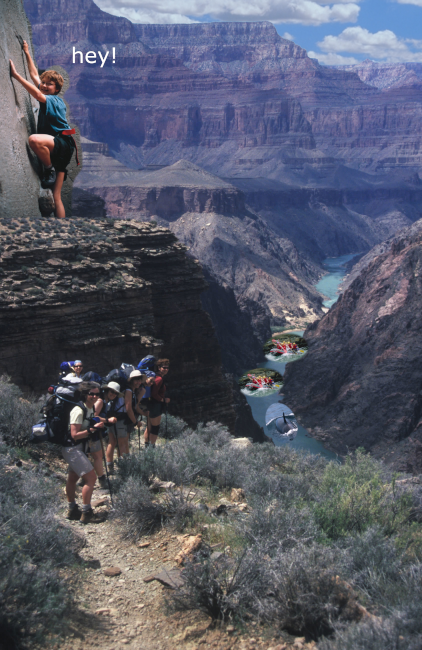

A Kinesiology portfolio featuring data analysis, graphics, and video analysis from KNES 381
Respiratory Data Analysis
Python is an excellent tool for data analysis in Kinesiology as it is able to work with large datasets with multiple variables, as well as be used for visualising data in plots.
Below is an image of a graph created from a respiratory data example using Python, edited in Kaggle. This graph looks at VO2 and minute ventilation (VE) values over time, with the VO2max value identified at 2.78 L/min.
This second image of a graph below was created using the same respiratory dataset as above. This time looking at the fraction of expired carbon dioxide (FECO2) in percent, and VCO2 in L/min, both over VO2 in L/min. Additionally, this graph contains vertical lines indicating the time point where the gas exchange threshold (GET) and respiratory compensation point (RCP) were reached.
Excel is a integral part of data analysis in many disciplines of Kinesiology through the ability to analyse, graph, and interpret data.
The first image below is a portion of the dataset looking at training and reocvery parameters in athletes. It also includes the ratio of the two, and then a custom formula with conditional formatting highlighting recovery risk based on the ratio of training hours to recovery hours per day.
Below is an interactive Pivot Table made from separate athlete performance metrics present in the dataset. It includes separating the athletes based on sport and then looking at the group averages of anaerobic power and heart rate. Utilising Pivot Tables like this one allow for the classification of athletes based on specific parameters, making it easier to interpret compared to large datasets.
Click here, or on the first image above, to download the full Excel workbook for a more in-depth and interactive look at several other performance related variables.
Graphics
The following images were completed in the graphics editor GIMP (GNU Image Manipulation Program). This software is a helpful, free alternative to software like Photoshop, and allows for image editing, image manipulation, and creating original artwork. The image below was used to combine graphics skills, such as inserting text and images, and background manipulation, into one image.

The two images below demonstrate an image repair that I completed in GIMP. This involved altering the colour levels of the image, selecting and replacing the sky with an existing image, and finally selecting, desaturating, and painting the grass green with the grain merge effect.
Video Analysis
Video analysis is a powerful tool for both athletes and coaches. It allows for objective feedback, visual learning, technique analysis, and has potential to aid in injury prevention and rehabilitation. The video below was completed in video analysis software Dartfish, which specialises in using video to enhance and track performance.
This video is of a men's gymnastics high bar skill known as a Kolman. This example of video analysis is a demonstration of utilising the angle tool for measuring body segment and joint angles, text boxes for description, and the measurement tool for estimating height.
Fun things to try!
This is an under the sea maze game I made in Scratch by MIT. Collect all the bubbles along the way, and don't run out of time! Enjoy!
For an extra challenge, and some practise with navigating the basic command line interface, try Terminus from MIT!